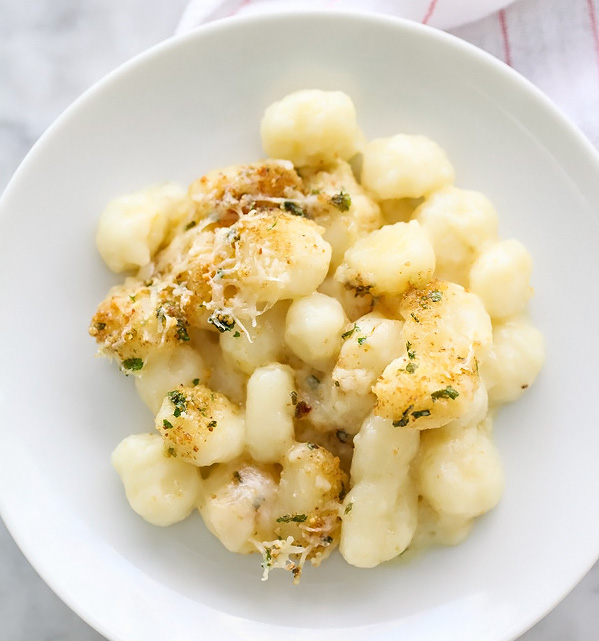

Gnocchi macaroni and cheese is bathed in an easy white cheddar and truffle infused sauce to add an elegant touch to everyones favorite comfort food.
Prep Time: 45 minutes
Bake Time: 15 minutes
2 sixteen ounce boxes mini gnocchi
4 tablespoons truffle butter
3 tablespoons all-purpose flour
2 cups whole milk
1 ½ cups Wisconsin swiss cheese grated
1 cup Wisconsin white cheddar cheese
½ cup plus 2 tablespoons grated Wisconsin parmesan cheese
1 teaspoon kosher salt
½ teaspoon ground white pepper
¼ cup dry bread crumbs
1 peeled garlic clove
1 tablespoon fresh Italian parsley
1. Preheat oven to 375°F.
2. Cook gnocchi to al denté. according to package directions. Drain and set aside.
3. While pasta is cooking, prepare cheese sauce. Melt 3 tablespoons truffle butter in large saucepan or Dutch oven over medium heat. Add flour and whisk to combine, cooking over medium-low heat 3-4 minutes, whisking, until flour mixture becomes light brown in color. Add milk while whisking and cook over medium heat 5-10 minutes or until sauce thickens.
4. While the sauce cooks, melt remaining tablespoon of truffle butter. Add bread crumbs, 2 tablespoons parmesan cheese, melted butter, garlic clove and parsley to a food processor and process for 30 seconds or until minced. Set aside.
5. Remove sauce from heat and add swiss, white cheddar and remaining 1/2 cup parmesan cheeses; stir until melted. Season with kosher salt and white ground pepper.
6. Add drained gnocchi to sauce and stir to combine. Pour into an 8x8-inch baking pan or 1 quart casserole dish and sprinkle with bread crumb mixture and additional parmesan cheese, if desired. Bake 10-15 minutes or until the top is lightly browned and bubbly. Serve immediately.
Recipe and images from foodiecrush.com